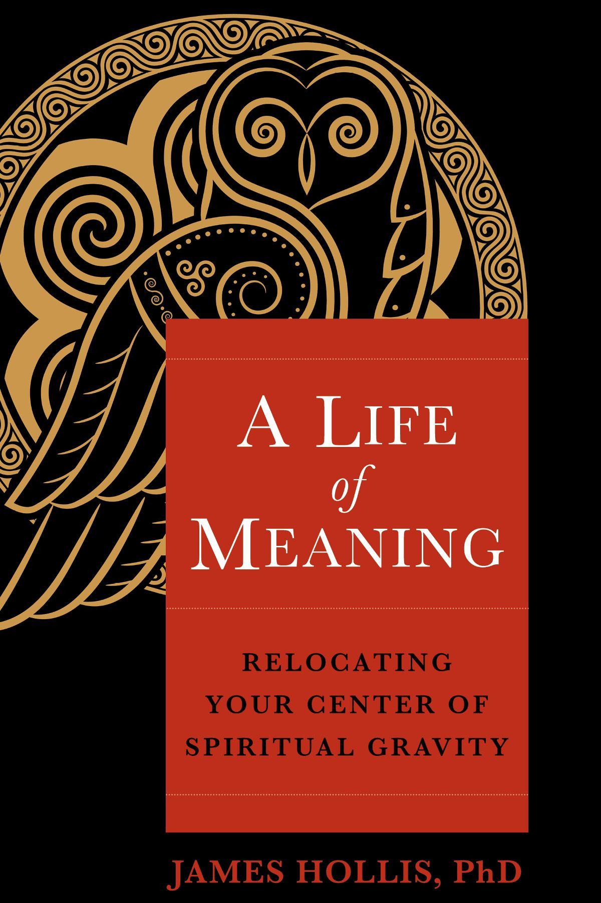

在线阅读全书 ›馆藏 · JUNGIAN PSYCHOLOGY
生命的意义
A Life of Meaning: Relocating Your Center of Spiritual Gravity
出版社 Sounds True
出版年 2023
ISBN 9781649630735
主题 荣格心理学 · 自我成长
是什么为你的生命带来意义？我们的文化教导我们去追逐财富、权力、声望，甚至他人的认可——然而当这些道路无法满足我们对目的的渴求时，我们该转向何处？
荣格分析师詹姆斯·霍利斯指出：当曾经定义我们的旧故事与信念已经耗尽，我们的任务是接通内在的罗盘——心灵的种种提示，帮助我们在复杂的选择丛林中找到自己的路。
本书借神话、文学、历史人物与深度心理学的智慧，穿透性地洞察「意义」的追寻，以及我们如何借由一次次选择，朝向它、或背离它。
目录
- 引言Introduction
- 第一章 · 辨析早年形成的种种影响Discerning the Formative Influences of the Early Days
- 第二章 · 中年过渡期：当一切分崩离析When Things Fall Apart in the Midlife Transit
- 第三章 · 个人与公共生活中的阴影相遇Shadow Encounters in Personal and Public Life
- 第四章 · 心理学视角下的七宗罪The Seven Deadly Sins Through a Psychological Lens
- 第五章 · 驱散操控我们人生的鬼魂Dispelling the Ghosts Who Run Our Lives
- 第六章 · 在变革中寻找个人韧性Finding Personal Resilience in Times of Change
- 第七章 · 回望旅程Reviewing the Journey
- 第八章 · 直面死亡，更充分地活着Living More Fully in the Presence of Mortality
- 结语 · 心灵想要什么？Conclusion: What Does the Psyche Want?